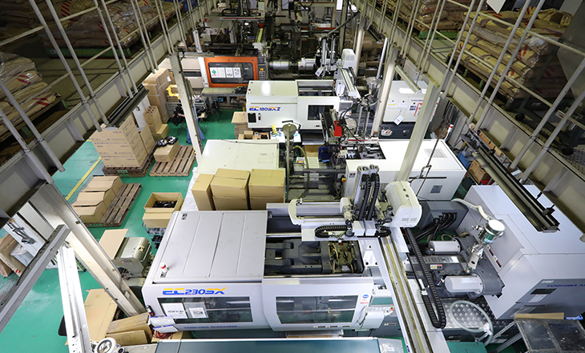

硬質塩化ビニルの成形をはじめとした、確かな技術力。
プラスチックの成形を主業務とする株式会社チヨダは、硬質塩化ビニルの成形をはじめとした確かな技術力が強みです。『長所は多いけれど、扱いが難しい素材』である硬質塩化ビニルをお客様のご要望に合わせて成形できる技術力・ノウハウは、日々技術の追求に努めている当社だからこそ提供できるメリットであると自負しております。今後も素材の特性をしっかりと把握した成形に努めてまいります。
ISO9001およびJIS認証規格をクリアする、高い品質管理能力。
「高品質な製品を作るには、技術力だけでなく、万全な品質管理も欠かせない」とチヨダでは考えております。当社の製品は、電柱・電線の絶縁カバーや電気配管用部品（継手）などです。インフラに関わる製品だからこそ、たった一つの不良品が致命的な状況を生み出すこともありえます。このようなミスを根絶するために、当社ではISO9001およびJISの認証を取得し、徹底した品質管理体制を整えてまいりました。製品によっては、新製品の開発段階で長期間にわたるさまざまなテストを行い、製品化した際にも梱包時のチェックだけでなく、製造過程での抜き取り検査を実施するなど、あらゆる工程で品質管理を徹底しています。これにより、お客様に安心品質を安定的に供給することができるのです。
コミュニケーションから生まれる、信頼と実績。
当社の製品づくりにおいて、技術力や品質管理能力と同じように大切に考えていることが「コミュニケーション」です。お客様とのコミュニケーションはもちろんのこと、社内におけるスタッフ同士のコミュニケーションにも細かく気を配っております。情報をしっかりと共有することができれば、課題に対するより良い改善策を構築することにつながり、結果的にお客様により良い製品をお届けできるためです。また、ISO規格に関しても、監査員としっかりと話し合い、より良い製品づくりのためのチヨダオリジナルの品質基準を設けることで、末永く品質管理に専念できる状況を作り、改善を重ねてまいりました。より良い環境整備のためには、"とことん話し合える"。これもチヨダの強みです。
チヨダでは、下記の細かなフローを通して、
製品づくりを行っております。
工程の随所で検査を行い、高品質な製品を
安定供給できるように努めています。
- 1お問い合わせ
- 当社へ製品製造のご依頼をご検討されている方は、まずはお問い合わせください。
その際、欲しい製品の図面やイラストなどがあると、よりご希望通りの製品製造につながりますので、当社までデータをお送りください。
- 2お見積もり
- お客様のご要望をお聞きした上で、お見積もりをご提示させていただきます。使用素材や数量などから算出したお見積もりですので、
ご不明な点がございましたら、お気軽にご質問ください。
- 3受注
- お見積もり金額にご納得いただけましたら、受注となります。受注が決定次第、作業へと移行します。
- 4成形
- 成形機に原材料を投入する前に、しっかりと金型および材料をチェックし、
問題が無ければ、成形工程に入ります。原材料ごとに熟練の職人が細かな調整を行います。
- 5工程内検査(成形品)
- 製造された成形品をしっかりと検査いたします。
- 6加工
- 製品によって加工（ 削り、穴開け、ナット埋込など） が必要な場合は、確かな技術で加工を施してまいります。
- 7工程内検査（梱包前）
- 成形品を梱包前にしっかりと検査いたします。
- 8梱包
- 成形および検査が完了したら、出荷数などを確認しながら、梱包いたします。
配送途中に破損などが起こらないように、細心の注意を払います。
- 9最終製品検査
- 外観や寸法などがお客様のご依頼通りであるか、最終検査を行います。
手間やコストはかかってしまいますが、ミスを極力出さないための最終検査となっております。
- 10出荷
- 最終検査をクリアした商品を出荷いたします。